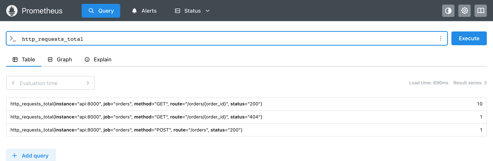

Модуль 3 · метрика как данные · модель данных
Глава 3.3
Метки и идентичность
ряда
Имя из главы 3.2 сообщает, что измерено. Метки сообщают, о какой части измеренного число. В этой главе разобрано, как имя и метки вместе определяют ряд и когда появляется новый ряд. Затем разобраны метки, которые ставит приложение, и метки, которые добавляет Prometheus. В конце показано, как выбирать ряды по меткам в запросе.
- Категория
- Модель данных
- Уровень
- Средний
- Опирается на
- Глава 2.2: job и instance; главы 3.1 и 3.2
- Результат
- Число рядов метрики по её меткам; выбор рядов в запросе
§1Метка уточняет число
«Казань, улица Баумана, дом 12». Каждая часть сужает предыдущую: из всех городов — один, из всех улиц города — одна, из всех домов улицы — один. Вместе части указывают на один дом.
method="GET", route="/orders/{order_id}", status="404". Каждая метка сужает число: из всех запросов — запросы GET, из них — к заказам, из них — с ответом 404.
Метка — пара «название — значение», которая уточняет, о чём число. Название метки, например status, одинаково у всех рядов метрики. Значение, например "404", у разных рядов разное. В главе 2.1 метки уже встречались. Здесь они разобраны на сервисе заказов, где у счётчика запросов три метки приложения.
На стенде отправлено десять запросов к существующим заказам, один запрос к заказу с номером 777 и один запрос на создание заказа. Запрос http_requests_total на вкладке Table вернул три строки.

В каждой строке пять меток. Три из них поставило приложение: method — метод HTTP, route — шаблон адреса, status — код ответа. Две добавил Prometheus при опросе: job и instance из главы 2.2. Значение справа — число запросов с таким сочетанием меток: десять успешных GET, один GET с ответом 404 и один POST.
Строки на кадре отличаются только метками, и Prometheus хранит их как три отдельных ряда. Следующий раздел объясняет, по какому правилу ряды отличаются друг от друга.
§2Идентичность ряда
Два письма идут в один дом, только если совпадает весь адрес: город, улица и дом. Если отличается номер дома, это другой адрес, даже когда город и улица те же.
Два отсчёта попадают в один ряд, только если у них совпадают имя и все метки. Если отличается одна метка, это другой ряд со своей историей.
Идентичность рядаseries identity · набор меток
Ряд определяется именем метрики и всеми метками вместе. Внутри Prometheus имя тоже хранится как метка с особым названием __name__, поэтому ряд — это набор пар «название — значение».
Два набора с одинаковыми парами — один ряд, в каком бы порядке пары ни были записаны.
То, что имя — тоже метка, проверяется запросом. Запрос {__name__="http_requests_total", status="404"} на стенде вернул тот же единственный ряд, что и обычная запись http_requests_total{status="404"}. Запись с именем перед скобками — сокращение первой.
Оранжевым выделено имя: в наборе это такая же пара, как остальные. Красным — пара, по которой первый ряд отличается от второго.
Порядок пар значения не имеет. Prometheus хранит их отсортированными по названию, поэтому в интерфейсе метки всегда идут по алфавиту: instance, job, method, route, status. В коде приложения они объявлены в другом порядке — method, route, status, — и ряд от этого не меняется.
Пустое значение метки
Метка с пустым значением равна отсутствию метки. Документация формулирует это так: метки с пустым значением считаются метками, которых нет. Это проверено запросом: у рядов стенда метки customer нет, и запрос http_requests_total{customer=""} вернул все три ряда. Поэтому {status=""} и ряд без метки status — один и тот же ряд.
Ряд определяется набором меток. Отсюда следует, что каждый новый набор меток создаёт новый ряд. Следующий раздел показывает, в какой момент это происходит.
§3Когда появляется новый ряд
Архивариус заводит папку на организацию, когда приходит её первый документ. Пока документов нет, папки нет, и сказать «в папке ноль документов» нельзя.
Библиотека создаёт ряд при первом событии с новым сочетанием значений меток. Пока такого события не было, ряда нет в ответе /metrics и в базе.
На стенде после запуска были только успешные запросы GET, и запрос count(http_requests_total) вернул 1: один ряд. Затем отправлены запрос к заказу 777 и запрос на создание заказа. Через 17 секунд, после очередного опроса, тот же запрос вернул 3. Появились ряды status="404" и method="POST".
У нового ряда история начинается с опроса после первого события. Отсчётов раньше этого момента у него нет. Поэтому запрос за прошлый час покажет ряд status="404" только с того опроса, на котором он появился. О том, что до этого ошибок 404 не было, база сообщает только отсутствием ряда.
Если нужно, чтобы ряд с нулём был с самого запуска, его создают заранее. В prometheus-client для этого вызывают .labels(...) без .inc(). Так на стенде проверено: после c.labels(status="200") в ответе появилась строка c_total{status="200"} 0.0.
Смена значения метки разрывает историю
То же правило действует, когда меняется значение у существующего ряда. Если в метке хранится версия приложения и после обновления она сменилась с 2.4.0 на 2.4.1, старый ряд перестаёт получать отсчёты, и начинается новый. Для базы это два разных ряда. Поэтому в метки записывают то, что не меняется у одного источника чисел: метод, адрес, код ответа. Значения, которые меняются со временем, в метку не записывают, если не нужна отдельная история на каждое значение.
Во всех примерах раздела значения меток ставило приложение: метод, адрес, код, версию. Но часть меток в наборе ставит Prometheus, и в ответе приложения их нет.
§4Метки приложения и метки target
Отправитель пишет на конверте адрес получателя. Почта при приёме ставит свой штамп: номер отделения и дату. Отправитель свой штамп не ставит, и почта не переписывает адрес.
Приложение пишет в ответ свои метки: метод, адрес, код. Prometheus при опросе добавляет метки target: job и instance.
Метки ряда приходят из двух мест. Метки приложения записаны в его коде и стоят в ответе /metrics. Метки target Prometheus берёт из своей конфигурации: job — название задания, instance — адрес target. Как показано в главе 2.2, если в ответе приложения уже есть метка job, Prometheus сохраняет её под именем exported_job и ставит свою.
Counter(…, ["method", "route", "status"])
job_name и targets в prometheus.yml
Метки в коде приложения
В коде метки задаются в два шага. При объявлении метрики перечисляют названия меток. При каждом событии передают значения в том же порядке. На стенде это выглядит так:
HTTP_REQUESTS = Counter(
"http_requests_total",
"HTTP requests handled by the service",
["method", "route", "status"],
)
...
HTTP_REQUESTS.labels(request.method, route, str(response.status_code)).inc()
Список ["method", "route", "status"] задаёт названия. Вызов .labels(...) получает три значения и возвращает ряд с этим сочетанием, а .inc() увеличивает его на 1. Код ответа переведён в строку функцией str, потому что значение метки — всегда текст. Библиотека переводит число в текст и без этого: на стенде вызовы labels(status=200) и labels("200") увеличили один и тот же ряд status="200" до 2.
Подробнее: ошибки в метках, которые находит библиотека
Ошибки в метках библиотека находит сразу, при вызове. Три случая проверены на prometheus-client 0.26.0.
| Что сделано в коде | Ответ библиотеки |
|---|---|
Метрика с метками, .inc() без .labels() | ValueError: counter metric is missing label values |
Объявлены две метки, в .labels() передано одно значение | ValueError: Incorrect label count |
Название метки начинается с двух подчёркиваний: __a | ValueError: Reserved label metric name: __a |
Названия с двумя подчёркиваниями в начале заняты служебными метками Prometheus, такими как __name__. Название le библиотека не даёт использовать в гистограмме: его занимают границы корзин.
Метки отличают ряды друг от друга. Они же служат для того, чтобы выбрать нужные ряды в запросе.
§5Выбор рядов по меткам
«Ноутбуки, производитель — любой, кроме одного, экран — 14 дюймов». Каждое условие отсекает часть товаров, и на экране остаются те, что подошли под все условия.
http_requests_total{method="GET", status!="200"}. Каждое условие в скобках отсекает часть рядов, остаются те, что подошли под все условия.
Условия на метки в фигурных скобках называются селектором. Условие состоит из названия метки, знака сравнения и значения в кавычках. Знаков четыре: = — равно, != — не равно, =~ — подходит под регулярное выражение, !~ — не подходит. Регулярное выражение — шаблон текста: 4.. означает «4 и любые два символа», то есть все коды от 400 до 499. Шаблон должен совпасть со всем значением метки целиком.
В таблице запросы к трём рядам стенда и число рядов, которое вернул каждый. Ряды те же, что на кадре в §1: GET 200, GET 404, POST 200.
| Запрос | Рядов | Какие |
|---|---|---|
http_requests_total | 3 | все |
http_requests_total{method="GET"} | 2 | GET 200, GET 404 |
http_requests_total{status!="200"} | 1 | GET 404 |
http_requests_total{status=~"4.."} | 1 | GET 404 |
http_requests_total{route=~"/orders.*"} | 3 | все: оба шаблона адреса начинаются с /orders |
http_requests_total{status="500"} | 0 | ответов 500 не было, ряда нет |
http_requests_total{route="/orders/17"} | 0 | в метке шаблон пути, номера заказа в ней нет |
Две последние строки дают пустой результат по разным причинам. Ряда с кодом 500 нет, потому что такого события не было: по §3 ряд появляется с первым событием. Ряда с адресом /orders/17 нет, потому что приложение записывает в метку route шаблон адреса /orders/{order_id}. Запрос к заказу 17 посчитан в ряду с шаблоном вместе с остальными заказами. Если бы в метке стоял полный адрес, у каждого номера заказа был бы свой ряд.
§6Проверьте себя
Вопрос 1У метрики метки method и status. Встретились сочетания GET 200, GET 500, POST 200. Сколько рядов у метрики на одном target?
Число рядов определяют встретившиеся сочетания значений меток.
Верно. Каждое сочетание значений меток — отдельный ряд. POST 500 не встречался, такого ряда нет.
Ряд POST 500 появится только после первого такого события.
Вопрос 2Один ряд записан как {status="200",method="GET"}, другой — как {method="GET",status="200"}, имя и target одинаковые. Сколько это рядов?
Верно. Ряд — набор пар, порядок пар значения не имеет. Prometheus хранит их отсортированными по названию.
Порядок записи на идентичность не влияет.
Вопрос 3Сервис запущен час назад, ошибок 500 не было. Что вернёт http_requests_total{status="500"}?
Ряд с нулём есть, только если его создали заранее вызовом
.labels(...).Верно, так на стенде. Ряд появится после первого ответа 500.
Метка
statusесть у других рядов. Результат пустой, потому что ряда с таким значением нет.
Вопрос 4В метку version записывается версия приложения. После обновления версия сменилась. Что произошло в базе?
Значение метки — часть идентичности ряда. Изменить его у существующего ряда нельзя.
Верно. Для базы это два разных ряда.
Другое значение метки — другой ряд, повтора нет.
Вопрос 5Какой селектор выберет все ряды с кодами ответа от 500 до 599?
Знак
=сравнивает текст точно: подойдёт только значение из трёх символов «5..».Верно.
=~сравнивает с регулярным выражением, точка — любой символ.Этот селектор выберет все ряды, кроме кода 500, в том числе 200 и 404.
- Prometheus. Data model: metric names and labels — prometheus.io/docs/concepts/data_model
- Prometheus. Querying basics: time series selectors — prometheus.io/docs/prometheus/latest/querying/basics
- Prometheus. Jobs and instances — prometheus.io/docs/concepts/jobs_instances
- prometheus-client для Python: labels — prometheus.github.io/client_python/instrumenting/labels
- Стенд модуля 3: запросы и вывод библиотеки получены 23.10.2026